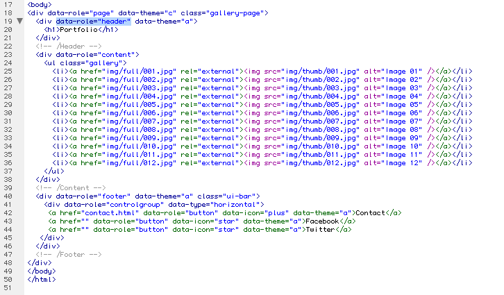
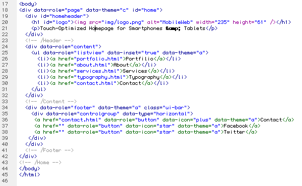

Thank you for purchasing my theme. If you have any questions that are beyond the scope of this help file, please feel free to email via my user page contact form here. Thanks so much!
The script can be used to detect a mobile device and send the user to it:
Important: Change the link!
You only need to insert your email in the file data/sendemail.php:
This theme is a fixed layout with one columns. All of the information within the main content area is nested within a div with a data-role of "content". The header content is within a div with an id of "homeheader" or a data-role of "header". The footer content is within a div with a data-role of "footer". The general template structure is the same throughout the template. Here is the general structure.

The home Menu is nested within a ul with a data-role of "listview".

I'm using two CSS files in this theme:
mobile.css
photoswipe.css
The mobile.css file contains all of the specific stylings for the page. The second file contains the specific stylings for the portfolio slider.
/* === General === */ some code /* === Portfolio Gallery === */ some code /* === Individual Color === */ some codeetc, etc.
If you would like to edit a specific section of the site, simply find the appropriate label in the CSS file, and then scroll down until you find the appropriate style that needs to be edited.
Any images that are placed within the Profolio Gallery have a 2px solid border. If you would like to edit the images style, find the following section in the style sheet:
.gallery li a {
change styles here:
}
If you would like to create your own color scheme, find the /* Individual Color */ section. Copy and paste the section under the last line and change the color values.
/* Individual Color */
.ui-bar-f {
border:1px solid #803714;
background:#ae4b1b;
color:#fff;
font-weight:bold;
text-shadow:0 -1px 1px #234403;
background:-webkit-gradient(linear, left top, left bottom, from(#ae4b1b), to(#803714));
background:-webkit-linear-gradient(top, #ae4b1b, #803714);
background: -moz-linear-gradient(top, #ae4b1b, #803714);
background: -o-linear-gradient(top, #ae4b1b, #803714);
background: linear-gradient(top, #ae4b1b, #803714)
}
.ui-bar-f, .ui-bar-f .ui-link-inherit {
color:#fff
}
.ui-bar-f .ui-link {
color:#fff;
font-weight:bold;
text-decoration:none;
}
.ui-btn-up-f {
background:#ae4b1b;
background:-webkit-gradient(linear, left top, left bottom, from(#ae4b1b), to(#803714));
background:-webkit-linear-gradient(top, #ae4b1b, #803714);
background: -moz-linear-gradient(top, #ae4b1b, #803714);
background: -o-linear-gradient(top, #ae4b1b, #803714);
background: linear-gradient(top, #ae4b1b, #803714);
border:1px solid #803714;
color:#FFF;
font-weight:bold;
text-shadow:0 -1px 1px #234403
}
.ui-btn-hover-f {
background:#ae4b1b;
background:-webkit-gradient(linear, left top, left bottom, from(#ae4b1b), to(#803714));
background:-webkit-linear-gradient(top, #ae4b1b, #803714);
background: -moz-linear-gradient(top, #ae4b1b, #803714);
background: -o-linear-gradient(top, #ae4b1b, #803714);
background: linear-gradient(top, #ae4b1b, #803714);
border:1px solid #803714;
color:#FFF;
font-weight:bold;
text-shadow:0 -1px 1px #234403
}
This theme imports three Javascript files.
I've included one psd with this theme:
If you'd like to change the logo, open "logo.psd", make the necessary adjustments, and then save the file as "logo.png". The logo.psd includes all 4 Color versions of the Logo. The versions are grouded in folders.
I've used the following images, icons or other files as listed.
Once again, thank you so much for purchasing this theme. As I said at the beginning, I'd be glad to help you if you have any questions relating to this theme. No guarantees, but I'll do my best to assist. If you have a more general question relating to the themes on ThemeForest, you might consider visiting the forums and asking your question in the "Item Discussion" section.
Adam Lukasik
ideeos.de